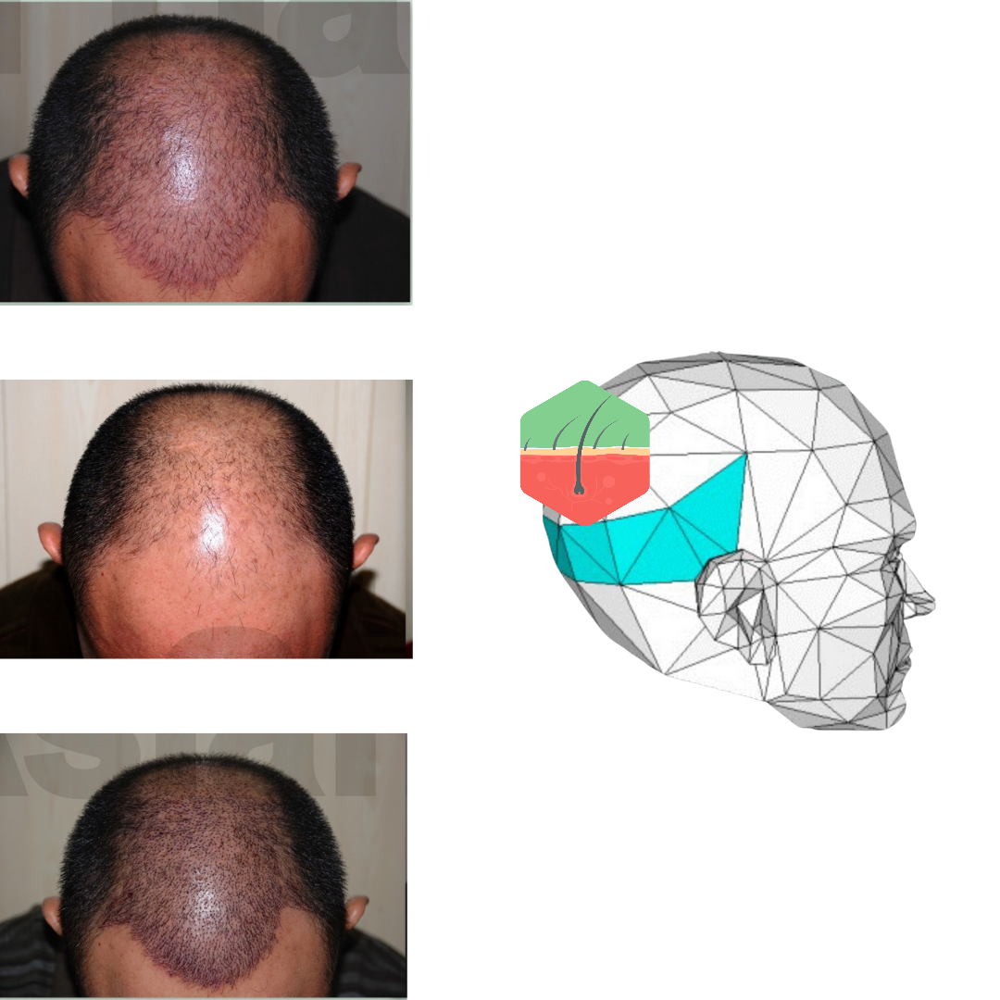

01 • FUE
FUE Hair Transplantation
Follicular Unit Extraction (FUE) is a minimally invasive surgical hair-transplant technique. Individual follicular units are harvested from a donor area and placed into carefully planned recipient sites.
What happens
- Hairline and density planning
- Local anaesthesia and sterile preparation
- Follicular-unit extraction
- Recipient-site creation and implantation
- Post-procedure monitoring and review
Important expectations
- Growth is gradual, not immediate
- Shedding can occur during the early phase
- Results vary with donor supply and health
- Follow-up helps assess healing and growth
- Clinic assessment is essential before treatment

Before-and-after image supplied by the clinic.